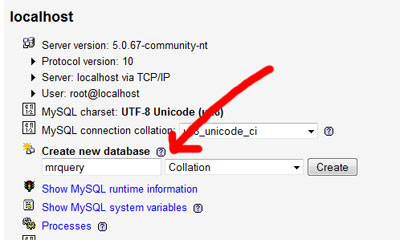
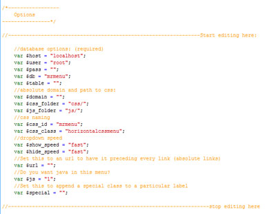
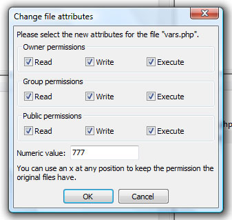
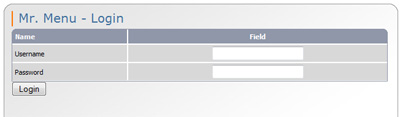
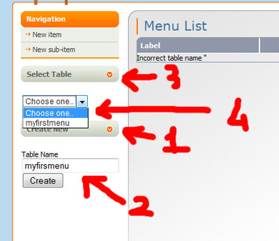
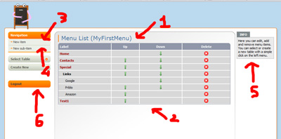
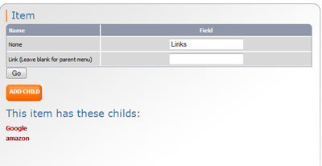
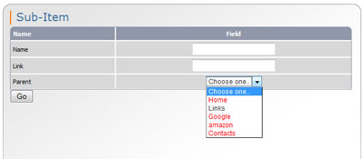

Thank you for downloading Mr. Menu, I will update regularly this widget, and add the feature YOU need, so please, feel free to drop me a line with your ideas and suggestions!
Mr.Menu is an object oriented menu widget.
These are the most notable features:
- Is able to render a dynamic menu from a database table.
- Is able to highlight the current page automagically and on the fly without any kind of user imput!
- Can append a special class to highlight a special link in the menu.
- Everything is customizable, from the css classes to the way the HTML is printed.
- Mr. Menu is object oriented, this allows to change every option on the fly, allowing to display how manu menus you like on the same webpage, each with his own customized style!
- Mr.Menu renders a standard <ul><li> menu. From horizontal to vertical, from background images to w3c complaint menus. You need a menu with two background images, no fear, with a simple option you can wrap links around a <span> tag.
- Mr.Menu can also render a list of all items in the menu to be placed on the foot of the website.
- AJAX admin for the cool web2.0 factor.
- The menu uses jquery to drop down the sub items in the menu with style!
The first thing to do is to create a MySql database. This can be achieved in several different ways, depending on your system of choice. The pure mysql command would be:
CREATE DATABASE `mrmenu` ;
On your webserver may be installed phpMyAdmin: with this wondeful script you simply have to input a database name in the main page:

Now that you have succefully created a database for Mr.Menu you will have to open the menu.class.php and change its options. I will guide you trought each and every option.
The only compulsory options for the system to work at least on a basic level are the database ones, the other options are mainly for customization. Please note that some option are very specific and can make the system unusable if not set properly. Most of the time you won't need to set any of these options!Database
- host: where mySql is located. Eg. localhost
- user: username to access the database. Eg. root
- pass: the password for the database.
- db: the database name you chose in the database creation step. Eg. mrmenu
- table: this is the table name of the menu. Since Mr.Menu can handle multiple menus, you can either set this globally or simply ignore this option and call a table on a page to page basis.
CSS options
- css_id: this contains the id of the ul that wraps the menu. If you set this to 0 the ul will not have any id. Eg. mrquery
- css_class: this contains the class of the ul that wraps the menu. If you set this to 0 the ul will not have any class. Eg. horizontalcssmenu
- css_active: this contains the name of the class that contains the active link (please refer to the css section for more informations).
- css_parent: this contains the name of the class of the item that has childs (please refer to the css section for more informations). If you change this you also need to change the mrmenu javascript file.
- css_special: this contains the name of the class that contains the special link (please refer to the css section for more informations).
- css_hidden: this contains the name of the class of the submenu (please refer to the css section for more informations).
HTML options
- span: this is disable by default if you set this to "a" the links will appear like this <a><span>link</span></a> (as opposed to the: <a>link</a> default). This is useful to create fluid menus with background images. See the css section for more information on the html code that Mr.Menu outputs.
- special: If you set this, the system will append a .special class on every label that has this name. If you set this to "Home", every parent item in the menu will have a .special class appended in both the <a> and <span> tags (or only the <a> tag if span is set to false). This can be used if you need a special styled button (see live demo for an example).
- url: this will append an url to all of the links. This is the correct way to create absolute links. And also the only way to make the auto highlighter work in a subfolder (see here).
AUTH
- username: username for logging into the admin. Eg. username
- password: password for logging into the admin. Eg. password.
- Please note that in order to help the integration of Mr.Menu inside a CMS if you don't set both username and password ($username/password="") there won't be any login page.
Now you'll have to upload the menu.class.php, the jquery file and the css style on your web server. If you haven't changed anything in the paths section the default folders are css/mrmenu.css and js/jquery.js. The admin folder must be placed on the same directory level of the menu.class.php file as it needs it to operate.
This can be easily done using the ftp client of you choice, i strongly suggest filezilla, which is freeware and very reliable. Here is a screenshot of the correct attributes on filezilla:

The admin can be easily integrated in another system like a cms or can be used indipendently. To make it simple to iintegrate the authentication system is easily overridden. There are two way to achieve this:- Simply set the username and password to 0 in the options this will actually override the login system.
- If you need a more drastic solution simply delete this line:
<?php require_once 'func/admin.class.php'; $authorizer = new Authorizer; $uid = $authorizer->isLogged(); ?>
You will find it on top of: index.php, item.php, sub_item.php and all the file inside the ajax/ folder. Deleting this line will not compromise in any way Mr.Menu functionalities.
Now it's time to start messing around with the admin!
Since the admin is fully ajaxed I beg you to use a standard complaint browser like firefox, chrome, anything but explorer.
After the login procedure (that will appear only if a username and password is set):

The main page of the admin will greet you: the first time you access the system an error will be displayed: Incorrect table name ''This is absolutely normal since we haven't created any table yet. So the first thing to do is to create one:

- Click on create new, a field will appear
- Choose a table name and click create. Once done click on close.
- Click on select table, a list will appear.
- Choose your newly created table.
At this point you can start adding items and sub-items check the info box on the right, it contains useful info about the page you are on.
The system refers to items that are on the top level of the menu as "parents" while items that stand on the sub-level of the menu are referred as "childs". A parent may or may not have a child.
I will give you an overview of the admin:

- Name of the current table
- Overview of the table items, here you can move the item up or down on the list or delete an item. Clickig on the item name lets you edit it. Red items are parent withouth any childs. Bold items are parent with childs, the normal styled ones are child items adn they always appear indented under their parents.
- Click here to create a new parent item
- Click here to create a new child item
- Info box. Here you can receive help directly from the system.
- Logout click here to log out of the system
Creating a new item is straightforward, after you click on the New Item link, you will be greeted by this screen:

- Name is the label that the item will have
- Link is the link that the item will have. If you leave this empty the system will assume that this item will have childs
- If you are editing the item, the add-child button will appear. This lets you add a new child with the correct parent already selcted. If the item has child, they will appear here as a list.
Creating a sub-item is also straightforward, after you click on the New Sub-Item link, you will see this screen:

- Name is the label that the item will have
- Link is the link that the item will have.
- Parent. Here you can select the parent of this sub item. The item in red are parent with a link. Selecting them will delete the parent link since parent with child cannot have any link.
Now let's talk about css shall we?
There are tons of free css menus either horizontal or vertical. A great resource to find them is: cssmenumaker.
Both of the included examples are taken from: dynamicdrive to show how easy it is to use any kind of css style with Mr.Menu!
To modify the css you have to understand how Mr.Menu outputs html (in this example span is set to 1):
<ul id="mrmenu" class="horizontalcssmenu">This is the standard html code printed by Mr.Menu, there are several option to alter this structure. First of all if you set the option $span="1"; a span tags will wrap the links. On top of this you can rename the three special classes included. You can paste any kind of css menu found on the web, the only things you have to mind are the special classes: I will now explain what they do using their standard names:
<li>
<a id="active" href="index.php">
<span id="active">Home</span>
</a>
</li>
<li class="parent">
<a class="parent" href="#">
<span>Links</span>
</a>
<ul class="hidden">
<li>
<a href="http://www.google.com">Google</a>
</li>
<li>
<a href="http://www.amazon.com">Amazon</a>
</li>
</ul>
</li>
</ul>
- .active: is the class for the active link. You can style this anyway you like or simply ignore this if you don't need to highlight the current webpage.
- .parent: this is the class of the item that has child (both in <li> and <a> tags), again you can choose to ignore this, but be advised that this class is needed to be set for the drop down effect in jquery.
- .special: this class will be appended to both the <a> and <span> tags (like #active). Please refer to the setup section for more information on this one.
- .hidden: this class is appended to the submenu. must contain: display:none to hide the submenu.
and now at last but not at least let's see how to include the menu in your webpages!
First of all you need to add your CSS definition to the file, otherwise the menu won't work as expected:
<link rel="stylesheet" type="text/css" href="css/mrmenu.css" media="screen">
This is an example with the default stylesheet, in the 'href' parameter you can put your custom css file.
Then you need to add the required java, use this line to include the jquery library:
<script type="text/javascript" src="'js/jquery.js'"></script>
And this line to include the custom java required by mrmenu:
<script type="text/javascript" src="'js/mrmenu.js'"></script>
I will now explain in detail how to customize mrmenu.js .
JAVA
I have included an additional file called mrmenu-noc.js this file contains a noConflict mode (to avoid conflicts with other libraries) version of the script, if you need this simply use this line:
<script type="text/javascript" src="'js/mrmenu-noc.js'"></script>
Instead of the default one.
You can also alter these parameters:
- $('li.parent').hover: change the parent line to suit the alternative name you set with: css_parent option.
- show("fast");: this sets how fast the submenu will be shown. This can be any valid jquery parameter.
- hide("fast");:this sets how fast the submenu will be hidden. This can be any valid jquery parameter.
If you never used object oriented php programming don't be scared, I will explain everything.
This is a symple Mr.Menu call:
<?php
include 'menu.class.php';
$menu = new Menu("myfirstmenu");
$menu->makeMenu();
$menu->makeFooter();
?>
- include 'menu.class.php'; this is a standard php include if the class will be on the same level of the webpages this will be the line you'll use.
- $menu = new Menu("myfirstmenu"); this is the initialization of the class, between the " " is the table name. You can also call the class like this: $menu = new Menu; if you set up the table in the class options.
- $menu->makeMenu(); this prints the actual menu. You can call it wherever you may need it.
- $menu->makeFooter(); Another notable feature of Mr.Menu is the ability to output every single link of the menu as a simple list of <a> links. This can be called anywhere you like, normally you would place this on the footer of the website.
On top of this you can override every single option discussed in the setup section.
(
Note that the database setup cannot be overridden)
Examples:
If you want to have absolute links in one of your pages you can do it like this:
$menu->url="http://www.mywebsite.com";
You may also need to use another stylesheet on a particular webpage:
$menu->css_name="mystyle2.css";
Note you can set as many option as you like, but you must do it after this line:
$menu = new Menu("myfirstmenu");
And before this line:
$menu->js();
Plese refer to the example.php file to see a working example.
Note
There is something you should know about the auto highlight feature.
The system assumes by default that the site will be located on the root of the site:
eg. http://www.sitename.com/pagewithmenu.php
If you need to place the menu on a subfolder
eg. http://www.sitename.com/a_folder/pagewithmenu.php
you must create links relative to that folder and use the url parameter:
This: pagewithmenu.php will become a_folder/pagewithmenu.php
And the menu will be called with:
$menu->url="http://www.sitename.com/";
If you need anything that has not been covered in this file, you have a suggestion or you have encountered any kind of proble, you can reach me here.
Kind Regards,
Davide Gaido